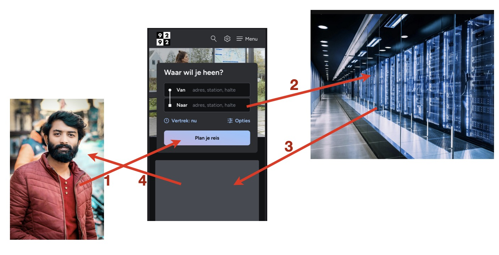
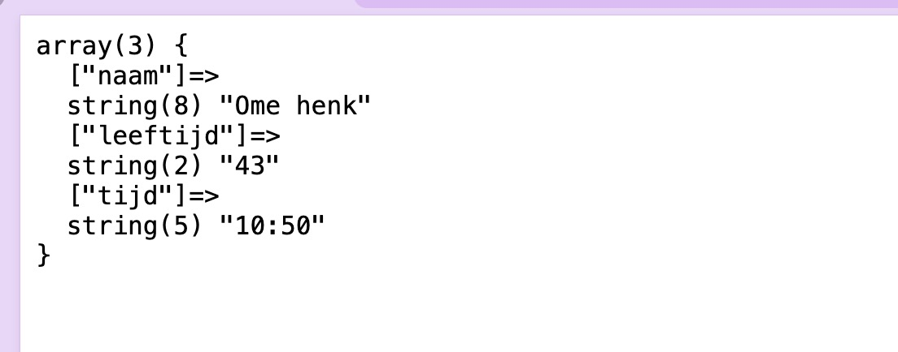
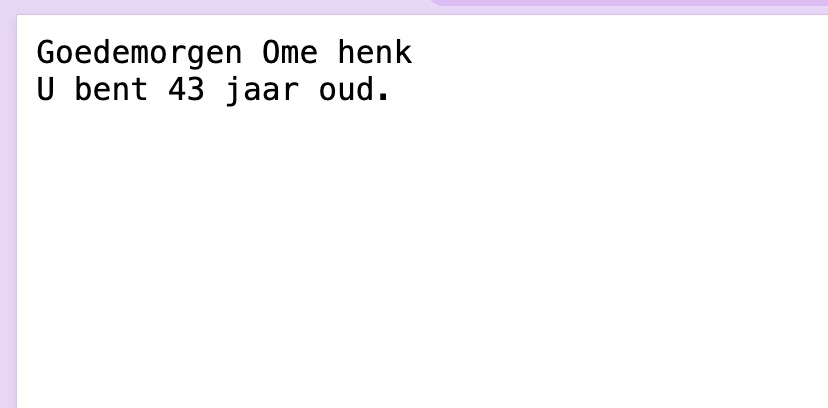

Formulieren#
Eén van de belangrijkste dingen die de client (de browser) moet doen, is de gebruiker de mogelijkheid bieden om data te manipuleren, op te slaan of te raadplegen. Wanneer je bijvoorbeeld een zoekterm intypt in DuckDuckGo, het rooster van een docent opzoekt in digirooster, of je reissschema via 9292 uitzoekt, gebruik je de browser als ingang naar de achterliggende zoekmachine, het achterliggende roostersysteem, of de achterliggende planningssoftware.

GET en POST#
Om dit allemaal te kunnen bewerkstelligen is het noodzakelijk dat er data van de client naar de server worden verstuurd. De server moet immers weten waar je op wilt zoeken of van welke docent je het rooster wilt raadplegen. Deze situatie is iets anders dan hoe je normaal een webpagina opvraagt. In de regel doet de client een verzoek voor informatie naar de server en reageert de server met die informatie. In deze situatie is het verzoek evenwel niet (of niet alleen) een verzoek om informatie te krijgen, maar ook (en vooral) om data te verwerken.
We hebben iets vergelijkbaars al gezien toen we het hadden over gebruikersinvoer en navigatie: daar gaven we twee parameters (name en age) via de URL mee aan het request. Dit request was een GET-request, en de parameters werden dan ook door php in de $_GET-superglobal opgevangen.
Een beter, gebruikelijker en veiliger manier van data naar de server sturen is om een ander soort request uit te voeren. In plaats van GET maken we gebruik van POST: we POST-en een stuk data naar de server, die doet daar zijn ding mee en antwoordt – eventueel – met een reponse.
Vormen van request
GET en POST zijn zogenaamde http-werkwoorden (http-verbs). Er worden in RFC9110 (§9.3) in totaal acht beschreven, maar we komen er in het wild eigenlijk maar vier tegen. In het volgende hoofdstuk gaan we wat uitgebreider in op deze werkwoorden.
Een belangrijk verschil tussen GET en POST is dat deze laatste de mogelijkheid heeft om wijzigingen op de server aan te brengen. Wanneer ik data van de client naar de server stuur, is het natuurlijk de bedoeling van die client dat er iets met die data gebeurt – op wordt geslagen, verwerkt in een database of gebruikt voor één of andere query.
POST-requests zijn om deze reden niet veilig: wanneer we de mogelijkheid bieden de server vanaf de buitenkant te benaderen, hebben we onmiddellijk en onvermijdelijk een lek in die server gecreëerd – een lek dat we zo snel en zo goed mogelijk willen dichten.
Eén van de infrastructurele aanpassingen die voor de dichten van belang is, is dat we niet zonder meer een POST-request naar een server kunnen doen.
INPUT en FORM#
De data die de client naar de server wil versturen, komen natuurlijk op hun beurt ook weer ergens vandaan: in de regel een bezoeker van onze website. Deze persoon vult gegevens in, klikt op een knop, de client verzamelt deze gegevens en stuurt het naar de server.

Niet altijd database
Let op: hoewel de server in de sequence-diagram hierboven gebruik maakt van een database, is dat natuurlijk niet noodzakelijk. De server kan ook prima werk doen zonder dat er spake is van een database of resource-layer.
De velden die onze bezoeker kan invullen, komen van de html-tag <input>, waarbij het soort invoerveld vastgesteld wordt aan de hand van het type-attribuut. Er zijn enige tientallen mogelijke waarden van dit attribuut, waarvan we een aantal hieronder weergeven:
|
soort invoerveld: |
|---|---|
|
Standaard tekst-invoer (één regel) |
|
Een select-vinkje |
|
Tekst-invoerveld met email-validatie |
|
Wachtwoord-invoerveld (laat bolletjes zien wanneer je typt) |
|
Uren en minuten (zonder tijdzone, overigens) |
Behalve deze vormen van de input-tag, zijn er ook nog andere tags die je kunt gebruiken om bezoeksinput te verzamelen; denk aan dingen als knoppen, dropdowns, of bestanden.
Omdat alle input-elementen van een formulier als key-value worden verstuurd, is het van belang dat de browser weet hoe de betreffende elementen heten. Hiervoor gebruik je het attribuut name. Let op: je hebt natuurlijk ook hier het attribuut id, maar daar gebeurt voor wat betreft het formulier niks mee (behalve als je het anders programmeert, vanzelfsprekend).
Al deze tags worden samengevoegd in een form-tag: door deze structuur weet de browser welke elementen bij welk formulier horen:

Eén formulier per pagina
Hoewel er in principe niks mis is met meerdere formulieren op één pagina, is het niet heel gebruikelijk. Er zijn zelfs web-frameworks die het niet toestaan om meerdere formulieren op één pagina te hebben.
Er zijn twee belangrijke attributen die je (in de regel) aangeeft bij een form-tag: de action en het method. Met de action geef je aan waar de actie beschreven staat waar de verdere verwerking van het formulier plaatsvindt. In ons specifieke geval zou dat het php-script zijn dat voor deze verwerking verantwoordelijk is.
Het attribuut method bepaalt met welk http-verb de verzamelde data verstuurd wordt. Dit attribuut kent slechts twee mogelijke waarden: get en post, conform de discussie hierboven.
Feitelijk drie
Feitelijk kun je method ook nog de waarde dialog geven, maar da’s zo’n specifieke situatie dat we die hier negeren.
De superglobale parameter $_POST bevat, net als de $_GET, de invulde waarden van het formulier.
Een uitwerkt voorbeeld#
De volgende html levert de onderstaande webpagina op (hierbij is slechts minimale stilering toegepast).
<form method="post" action="demoscript.php">
<h1>Vul hieronder uw gegevens in</h1>
<div><b>Naam:</b> <input type="text" placeholder="Uw naam"></div>
<div><b>Leeftijd:</b> <input type="number"></div>
<div><b>Huidige tijd:</b> <input type="time"></div>
<div><button>Formulier versturen</button></div>
</form>

Als de bezoeker nu op de knop onderaan het formulier klikt, wordt de data die is ingevoerd door de browser verstuurd naar het script dat is aangegeven bij het action-attribuut van de form-tag: demoscript.php. Als we in dat script alleen de regel var_dump($_POST); zetten, krijgen we keurig wat de persoon heeft ingevuld:

Maar we kunnen natuurlijk ook wat ingewikkelders doen met die data:
$check = (int)explode(':', $_POST['tijd'])[0];
$aanhef = ($check < 12)
? 'Goedemorgen '
: 'Goedemiddag ';
$bericht = $aanhef . $_POST['naam'] . "<br>";
$bericht .= "U bent " .$_POST['leeftijd']. " jaar oud.";
echo $bericht;
